Liebe Eltern
Diese Geschichte ist eine Mitmachgeschichte für Kinder ab 3 Jahren. Auch größere Kinder bis etwa 11 Jahre fiebern mit und haben Spaß an den Bewegungen. Die reine Lesezeit beträgt etwa 15 Minuten, mit allen Bewegungen dauert sie etwa 25 bis 30 Minuten.
So lest ihr sie vor
Lest die Geschichte in Ruhe vor. Immer wenn ein grüner Kasten „Mitmachen“ kommt, macht ihr eine kleine Pause und bewegt euch gemeinsam, so wie es im Kasten steht. Danach geht die Geschichte weiter. Euer Kind bestimmt das Tempo: Man muss nicht alles mitmachen, und jede Übung darf auch zweimal gemacht werden.
Das braucht ihr
- Etwas Platz auf dem Boden, zum Beispiel im Wohnzimmer oder Kinderzimmer.
- Einen Barfußpfad: Legt verschiedene Untergründe hintereinander, je nachdem, was ihr zu Hause habt. Legosteine oder Duplosteine, glatte Platten, ein weicher Teppich, ein Handtuch, ein Kissen oder Sensorik-Puzzlematten, zum Beispiel von Muffik.
- Ein paar Bälle, Kissen oder Kuscheltiere und einen Wäschekorb für das Aufräumen am Ende. Verteilt alles schon vorher im Raum, oder nehmt einfach, was nach dem Tag sowieso im Kinderzimmer herumliegt.
- Wer mag: leise Weihnachtsmusik.
Ein Geschenk aus dem Flüsterwald
Dieses Winterpaket ist kostenlos. Kürbisfee Pia stammt aus der Kinderphysiotherapie der Praxis Humaneo in Bad Homburg. Teilt das Paket und den Link zum Online-Buch gern mit anderen Familien, Freunden, Großeltern oder eurer Kita.
Und jetzt viel Spaß im Flüsterwald!
Die Übungen aus der Geschichte
Bevor die Geschichte losgeht, schaut euch die Übungen am besten einmal zusammen an. Dann wisst ihr beim Vorlesen schon, was gemeint ist, und euer Kind kann es kaum erwarten, sie auszuprobieren.
Zu jeder Übung findet ihr den Namen aus der Geschichte, den Namen aus dem Kinderyoga und den alten Namen aus dem Sanskrit, der Sprache, aus der das Yoga in Indien kommt. Geht euer Kind einmal in einen Kinderyogakurs, kennt es die Übungen dann schon.
Als Kinderphysiotherapeutin verrate ich euch außerdem, wofür jede Übung gut ist. Bei Kindern geht es nicht um eine perfekte Haltung, sondern um Freude an der Bewegung. Die Tipps helfen euch nur, die Übungen gut anzuleiten.
- Atmet bei allen Übungen ruhig und tief weiter. Nicht die Luft anhalten.
- Keine Übung darf wehtun. Ein Ziehen beim Dehnen ist in Ordnung, Schmerzen nicht.
- Lieber langsam und mit Kraft als schnell und wackelig.
Der Kürbisatem
So geht’s: Setzt euch bequem hin oder stellt euch hin. Atmet langsam durch die Nase ein und stellt euch vor, wie eine Blume ihre Blüte öffnet. Dann atmet ihr langsam wieder aus, so wie ein Blatt ganz sanft zu Boden fällt. Macht das drei Mal hintereinander.
Darum ist die Übung gut: Pias Zauber klappt nur, wenn sie ruhig ist. Darum macht sie den Kürbisatem. Langes, ruhiges Ausatmen beruhigt den Körper: Das Herz schlägt langsamer, die Gedanken werden ruhiger, und man kann sich besser konzentrieren. Der Kürbisatem ist ein schöner Start in die Geschichte und hilft auch im Alltag, zum Beispiel vor dem Einschlafen oder wenn euer Kind sehr aufgeregt ist.
Tipp: Wer mag, öffnet beim Einatmen die Hände wie eine Blüte und lässt sie beim Ausatmen langsam sinken.
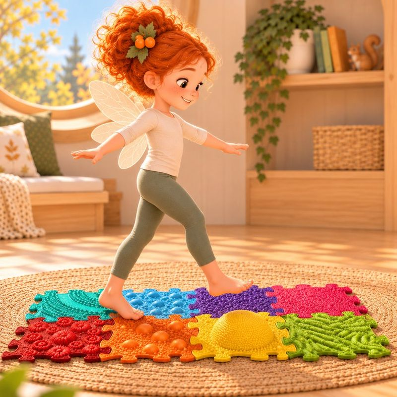
Der Barfußpfad
So geht’s: Legt verschiedene Untergründe hintereinander, zum Beispiel Duplosteine, glatte Platten, einen weichen Teppich, ein Handtuch, ein Kissen oder Sensorik-Puzzlematten. Dann läuft euer Kind barfuß ganz langsam darüber. Was ist weich, was pikst, was ist kalt?
Darum ist die Übung gut: In unseren Füßen stecken viele kleine Muskeln und unzählige Nervenenden, die spüren, worauf wir stehen. Auf unterschiedlichen Untergründen müssen die Füße immer wieder neu arbeiten. Das kräftigt die Fußmuskulatur, unterstützt das Fußgewölbe und schult Wahrnehmung und Gleichgewicht. In Schuhen kommt das oft zu kurz.
Tipp: Keine Zeit oder Lust, einen ganzen Pfad aufzubauen? Nehmt einen Igelball oder einen anderen kleinen Noppenball und rollt ihn im Sitzen unter den Fußsohlen hin und her. Wer sicher steht, kann das auch im Stehen probieren.
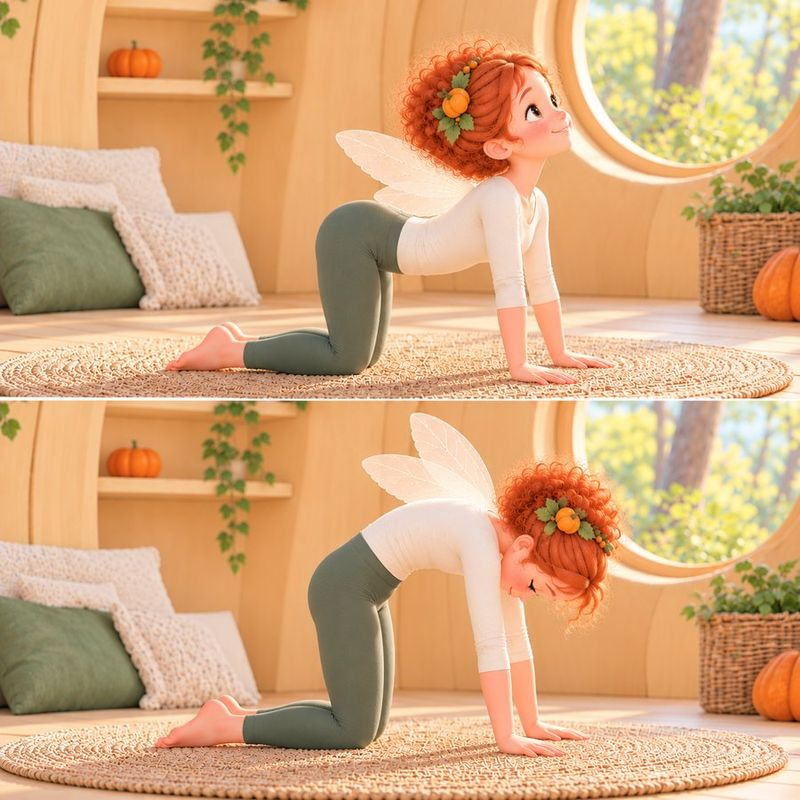
Berg und Hängebrücke
So geht’s: Geht in den Vierfüßlerstand, die Hände unter den Schultern, die Knie unter der Hüfte. Beim Ausatmen macht ihr den Rücken ganz rund und hoch wie einen Berg, das Kinn geht zur Brust und der Bauchnabel zieht nach innen. Beim Einatmen lasst ihr den Bauch sinken wie eine Hängebrücke und schaut leicht nach vorne. Wechselt langsam hin und her, etwa fünf bis acht Mal.
Darum ist die Übung gut: Katze und Kuh ist eine der besten Übungen zum Aufwärmen. Dabei bewegt sich die gesamte Wirbelsäule, Wirbel für Wirbel. Im Berg spannt ihr die Bauchmuskeln an und schickt Kraft in euer Zentrum, in die Mitte des Körpers. In der Hängebrücke streckt sich der Rücken wieder.
Tipp: Lasst euch Zeit und verbindet die Bewegung mit dem Atem. Je langsamer, desto besser.
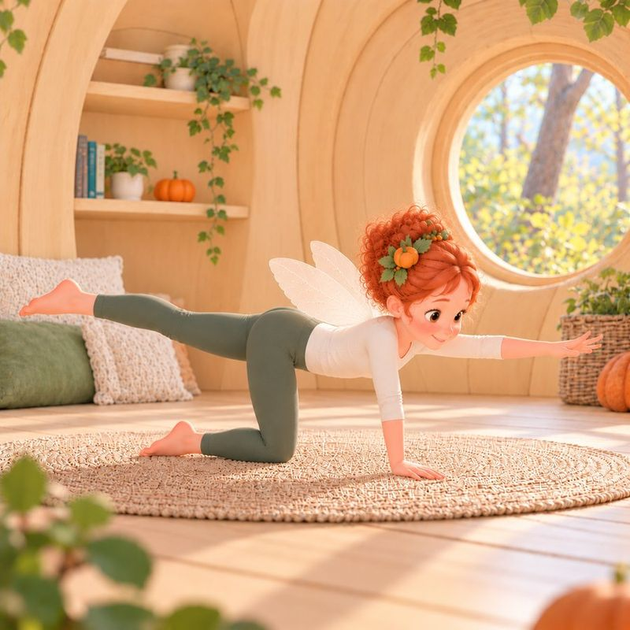
Lang wie ein Fuchs
So geht’s: Startet im Vierfüßlerstand. Streckt einen Arm nach vorne und das gegenüberliegende Bein nach hinten, so lang, wie es nur geht, wie ein Fuchs, der sich von der Nase bis zur Schwanzspitze streckt. Spannt den Bauch fest an und zieht ihn eher ein bisschen hoch. Der Rücken soll nicht durchhängen wie eine Hängebrücke. Der Kopf bleibt in der Verlängerung, der Blick geht gerade nach unten zum Boden. Haltet ein paar ruhige Atemzüge, dann wechselt die Seite.
Darum ist die Übung gut: Der Tiger stärkt die Rückenmuskulatur und bringt Länge in die Wirbelsäule. Gleichzeitig arbeiten die Bauchmuskeln, damit der Rücken stabil bleibt. Viel Kraft braucht es im Arm und im Bein, die unten stützen, aber auch im Arm und im Bein, die oben in der Luft sind. Weil Arm und Bein über Kreuz arbeiten, schult die Übung außerdem Gleichgewicht und Koordination.
Tipp: Wackelt es noch sehr? Dann erst nur den Arm heben, dann nur das Bein, und erst zum Schluss beides zusammen.
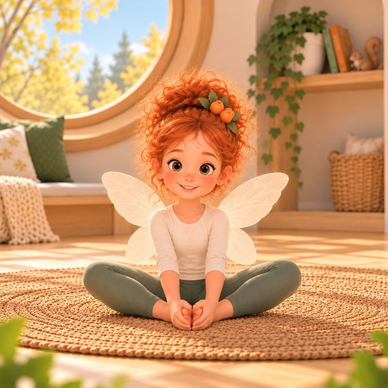
Der Schmetterling
So geht’s: Setzt euch aufrecht hin und legt die Fußsohlen aneinander. Die Hände halten die Füße. Macht euch ganz groß, als würde ein Faden euren Kopf nach oben ziehen. Dann lasst ihr die Knie sanft auf und ab flattern wie Schmetterlingsflügel.
Darum ist die Übung gut: Der Schmetterling dehnt die Innenseite der Oberschenkel und macht die Hüften beweglich. Das tut besonders gut nach dem Laufen. Das aufrechte Sitzen kräftigt nebenbei die Rückenmuskulatur.
Tipp: Die Knie nie mit den Händen nach unten drücken. Sie dürfen so weit sinken, wie es von allein geht.
Die Brücke über dem Mondbach
So geht’s: Setzt euch hin und stellt die Füße hüftbreit auf. Die Hände stützt ihr hinter dem Po auf, die Finger zeigen zu den Füßen. Jetzt drückt ihr den Po fest nach oben, bis euer Körper von den Knien bis zu den Schultern gerade ist wie eine Brücke. Po und Rücken fest anspannen und dabei regelmäßig und tief weiteratmen. Haltet die Brücke ein paar Atemzüge lang und setzt euch dann langsam wieder ab.
Darum ist die Übung gut: Diese Übung ist besonders wertvoll, weil wir alle viel zu viel sitzen, Kinder in Kita, Schule und Auto genauso wie Erwachsene. In der Brücke wird die ganze Vorderseite des Körpers gedehnt und gestreckt: Brust, Schultern und Hüfte. Gleichzeitig müssen Po- und Rückenmuskulatur kräftig arbeiten, und die Arme lernen zu stützen.
Tipp: Wer mag, kann aus der Brücke einen Krebs machen und ein paar Schritte durchs Zimmer krabbeln.
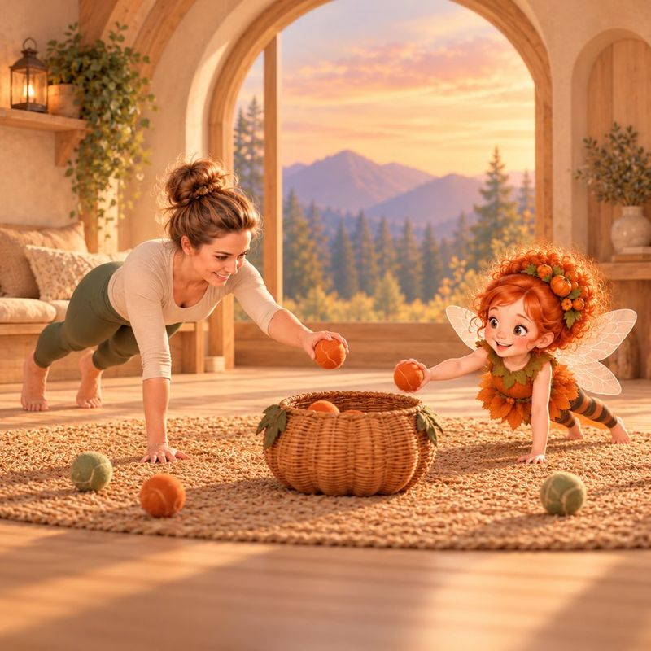
Aufräumen im Handstütz
So geht’s: Verteilt Bälle, kleine Kissen oder Kuscheltiere im Raum und stellt einen Wäschekorb in die Mitte. Geht in den Vierfüßlerstand, stützt euch auf eine Hand und werft mit der anderen Hand alles in den Korb. Zwischendurch die Hand wechseln.
Darum ist die Übung gut: Beim Aufräumen im Handstütz muss der Körper stabil bleiben, obwohl eine Hand den Boden verlässt. Das kräftigt Arme und Schultern und trainiert die Rumpfmuskulatur. Beim Werfen dreht sich der Oberkörper, und Zielen schult die Hand-Augen-Koordination. Und am Ende ist das Zimmer aufgeräumt.
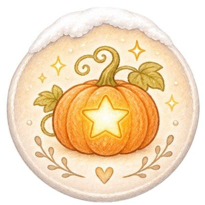
Stinkesocke und Weihnachtsduft
In einem magischen Kürbishaus am Rande des Flüsterwaldes wohnt Pia, die kleine Kürbisfee.
Heute bastelt Pia Weihnachtsgeschenke. Kleine Wichtel aus Tannenzapfen und Strohsterne. Überall liegen Strohhalme. Auf dem Tisch, auf dem Stuhl, und einer steckt sogar in Pias Haaren! Pias Tee dampft. Mmmh, das riecht nach Apfel und Zimt. Und Pia summt ein Weihnachtslied. Hmm, hmm, hmm.
Pia hat keine Socken an. Pia läuft am liebsten barfuß. Da kann man den Boden so gut spüren. Manchmal ist er warm und manchmal kalt. Manchmal picksig und mal ganz weich.
Da schaut Pia auf die Uhr. „Oh nein! Heute ist Lauftag! Gleich kommt Rana!“
Rana ist Pias Freundin. Sie ist eine Füchsin mit rotem Fell und einem buschigen Schwanz mit weißer Spitze. Und Rana ist immer pünktlich. Immer!
Schnell, schnell! Pia sucht ihre Socken. Einen findet sie, blau mit Sternen. Und der zweite? Weg! Neben dem Wäschekorb findet sie noch einen Ringelsocken. Den hatte sie gestern schon an, und ganz frisch riecht er nicht mehr. Sogar ziemlich stinkig ist er. Egal. Pia nimmt sich vor, später aufzuräumen. Schade, dass ihre Magie noch keinen Aufräumzauber zaubern kann. Jetzt hat sie einen Sternenfuß und einen müffeligen Ringelfuß. Pia muss lachen.
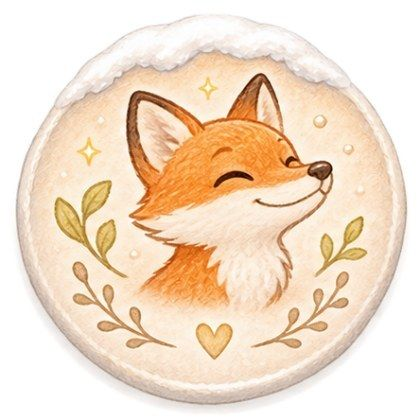
Ich glaub, es knackt wohl
Schnell läuft Pia in den Garten. „Rana, da bin ich schon, entschuldige, dass du …“ Aber dann stoppt Pia mitten im Satz. Der Garten ist leer. Keine Rana. Komisch. Rana ist doch noch nie zu spät gekommen.
„Hm, dann wärme ich mich eben schon mal alleine auf“, sagt Pia. Und sie ruft: „Eins, zwei, drei, Kraft herbei!“
Knack! Was ist das? Das kommt aus dem Wald. Äste knacken und brechen. Wieder ein Knacken. Schnell wie ein Blitz kommt Rana aus dem Wald geschossen. Mit einem großen Satz springt sie über den Zaun.
„Rana, wo warst du denn?“, fragt Pia.
„Ach, nur … unterwegs“, sagt Rana ausweichend. „Auf der … Jagd? Du weißt doch, dass ich im Winter Mäuse jagen muss.“ Sie schaut in den Himmel und schleckt dann an ihrer Pfote. Hmm. Irgendwas ist heute komisch an Rana. Ob Rana ein Geheimnis hat? Was meint ihr?
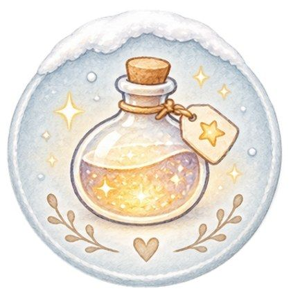
Glitzer im Wald
Ja, Rana hat ein Geheimnis. Heute Morgen war sie auf Mäusejagd. Ganz leise ist sie durch den Wald geschlichen. Lautlos.
Und dann hat Rana etwas Besonderes gerochen. Sofort hat ihr hungriger Magen laut geknurrt. Etwas Süßes lag in der Luft! Schnupper, schnupper. Sie ist dem Duft gefolgt, bis zu einem Platz mit Bänken. Und da hat es geglitzert und geschimmert und so gut gerochen! Silberne Tüten, die knistern. Bunte, süße Steinchen. Und Krümel mit Creme.
„Oh, was für ein Schatz!“, hat Rana geflüstert. „Das muss von den Menschen sein.“ Mit eingezogenem Schwanz hat Rana sich umgesehen. Aber kein Mensch war weit und breit. „Warum sie wohl diese Leckereien hier gelassen haben? Das muss mein Geheimnis bleiben. Pia mag es gar nicht, wenn Menschensachen im Wald liegen.“ Genüsslich hat Rana angefangen zu naschen. Und zu naschen. Und noch mehr zu naschen. Viel zu viel.
Aber das alles verrät Rana nicht. Sie ruft nur: „Los, Pia, wer als Erste am Sonnenhang ist!“
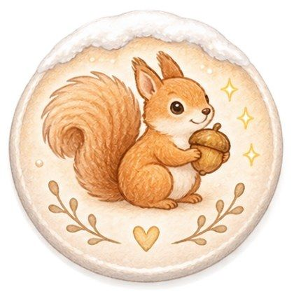
Ein trauriger Sieg
Pia und Rana joggen durch den Winterwald. Der Frost knirscht unter Pias Laufschuhen. Rana läuft ganz leise, fast lautlos.
Pia und Rana laufen immer weiter durch den Wald, vorbei am Mondbach und an der großen Kiefer, in der Hazel, das Eichhörnchen, wohnt. Plötzlich wird Rana langsamer. Und langsamer. Sonst rennt Rana immer vorneweg. Heute nicht.
„Alles in Ordnung?“, fragt Pia.
„Ja. Ja, ja, alles klar“, keucht Rana, als sie an Odas hohler Buche vorbeikommen und zum Sonnenhang abbiegen. Aber das stimmt nicht. Rana ist auf einmal ganz übel geworden. „Ich will dir nur einen Vorsprung geben“, ruft Rana keuchend, und Pia nutzt die Gelegenheit. Jetzt, wo sie gut aufgewärmt ist, fliegt sie fast die letzten Meter bis zum Sonnenhang. „Gewonnen!“, jubelt Pia. Aber so richtig freuen kann sie sich nicht. Sie hat ein ganz ungutes Gefühl im Bauch.
Wieder in Pias Garten angekommen, setzen die beiden sich hin, und Pia beginnt sich zu dehnen.
Als Pia fast fertig ist, legt Rana sich ganz nah neben sie. Das macht Rana sonst nie. „Aua!“, jault sie leise. „Mein Bauch!“ Rana rollt sich ganz klein zusammen.
„Pia“, flüstert sie, „ich habe zu viel von meinem Schatz genascht. Bist du jetzt böse auf mich?“ Verständnisvoll streicht Pia über Ranas weiches Fell. „Rana, du zitterst ja richtig. Ich bin doch nicht böse auf dich. Erzähl erst mal – was für ein Schatz?“ Und da beichtet Rana ihrer Freundin alles.
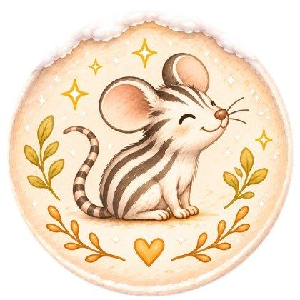
Kamillentee und Kekse
Pia weiß, was hilft: Kamillentee! Und ein bisschen Magie. Schnell, super schnell will Pia zaubern. Denn sie muss dringend ihrer Freundin helfen. Sie spürt, wie sich die Magie in ihr sammelt, und kann die goldenen Ranken schon fast sehen. Aber dann – Plopp! Da schwimmt ein kleiner Mini-Kürbis in der Tasse. Hoppla! Mit Eile klappt Zaubern nicht. Pia muss ganz ruhig werden.
Jetzt klappt es. Goldene Funken bilden sich um die Tasse und gleiten in den Tee, Pias Zauberranken breiten sich aus und verschwinden im Tee. Rana trinkt ihn ganz langsam. Und heute Nacht schläft Rana bei Pia im Kürbishaus. Pia kuschelt sich in ihr weiches Fell.
Am Morgen riecht es nach Pfefferminze und etwas Weihnachtlichem. Pia weiß sofort, wer da ist: Tante Linn, die Kräuterfee! Und in ihrer Manteltasche sitzt die kleine Zebramaus Pepper Ann. Tante Linn kommt immer genau dann, wenn man sie braucht. Sie hat Kräutermedizin und Bauchwehkekse für Rana mitgebracht. Mampf, mampf. Am Nachmittag geht es Rana schon viel besser.
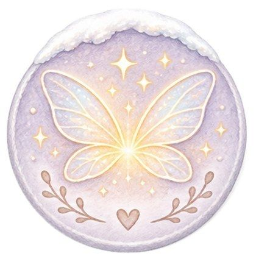
Ein echter Schatz im Wald
„Kommt mit“, sagt Rana. „Wir müssen meinen Schatz wegräumen.“
Zu dritt gehen sie zu dem Platz mit den Bänken. Und was liegt da wirklich? Leere Tüten. Bonbonpapier. Alte Kuchenreste. Das ist gar kein Schatz. Das ist Müll!
„Das haben Menschen liegen lassen“, sagt Tante Linn. „Aber Müll gehört nicht in den Wald. Davon bekommen die Tiere Bauchweh.“
Also räumen alle drei zusammen auf. Bücken, aufheben, ab in den Sack.
Jetzt ist der Wald wieder schön. „Der Wald ist der echte Schatz“, sagt Pia. „Schau dir die wunderschönen Bäume an! Riech, wie gut es im Wald duftet! Und wie die Sonne zwischen den Bäumen glitzert.“ Und Rana verspricht: „Du hast recht, Pia. Und wenn ich das nächste Mal einen Schatz finde, komme ich lieber gleich zu dir und sage Bescheid.“
Am Abend kuschelt Pia sich ins Bett. „Gute Nacht, Flüsterwald“, flüstert sie. Und ganz leise flüstert der Wald zurück: „Gute Nacht, Pia.“
Bilderreise durch die Geschichte
Jetzt dürft ihr euch die Bilder aus dem Flüsterwald anschauen. Erkennt ihr die Stellen wieder? Erzählt euch gegenseitig, was auf jedem Bild passiert.
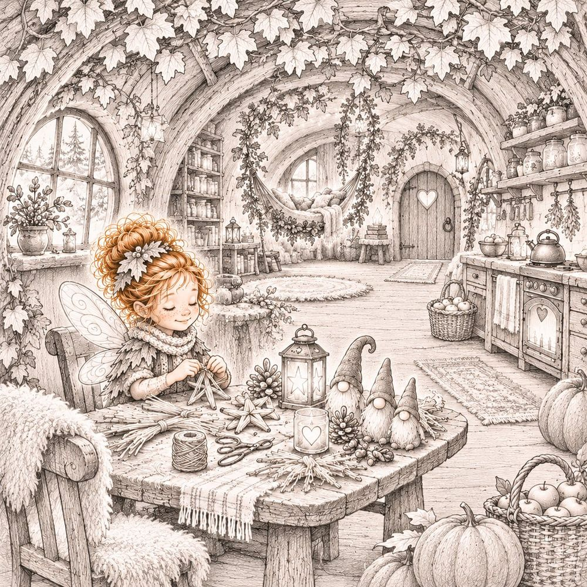
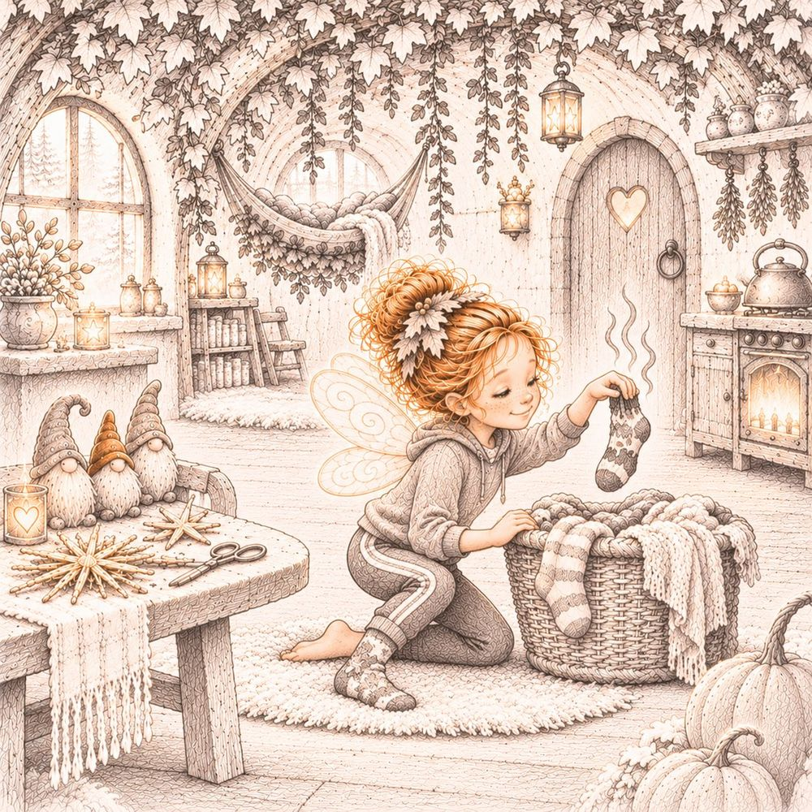
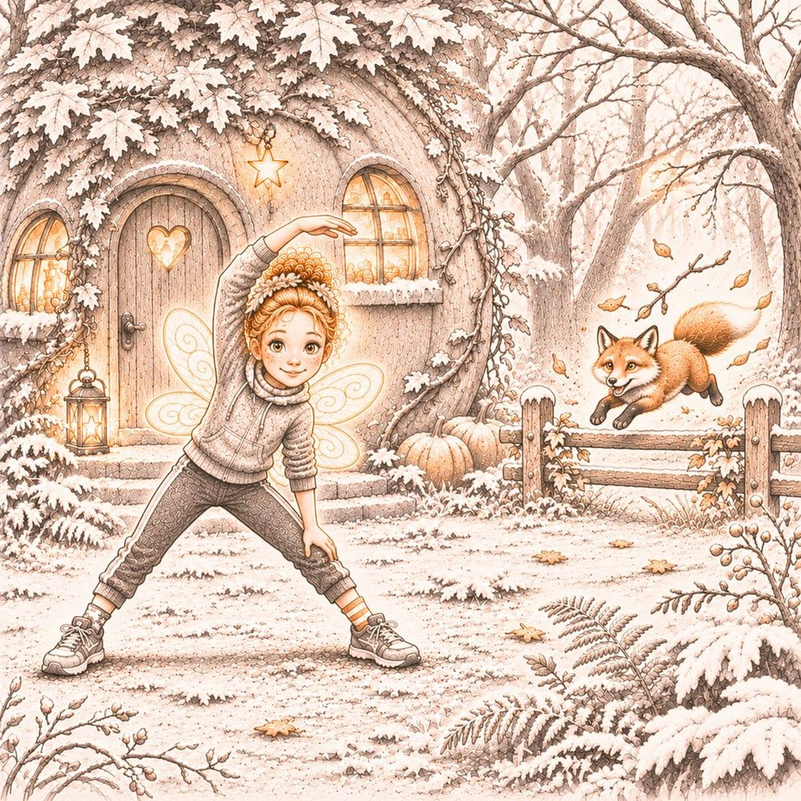
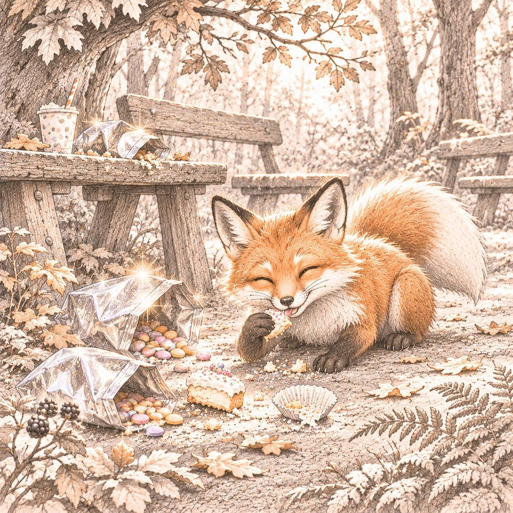
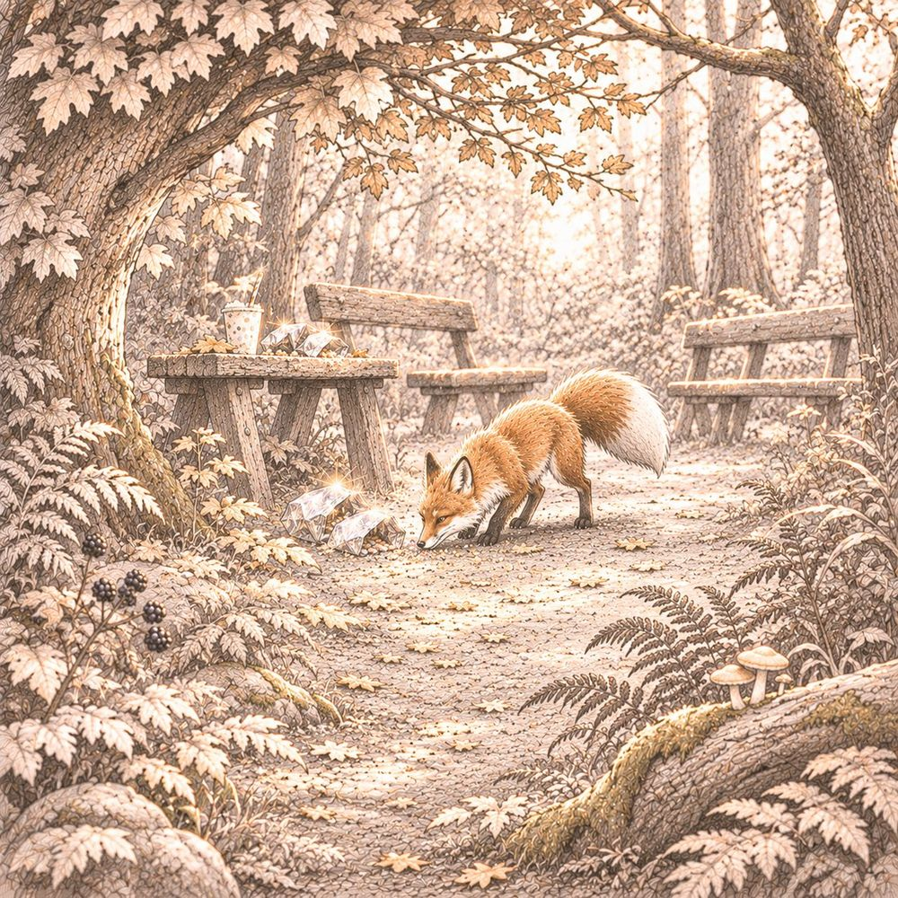
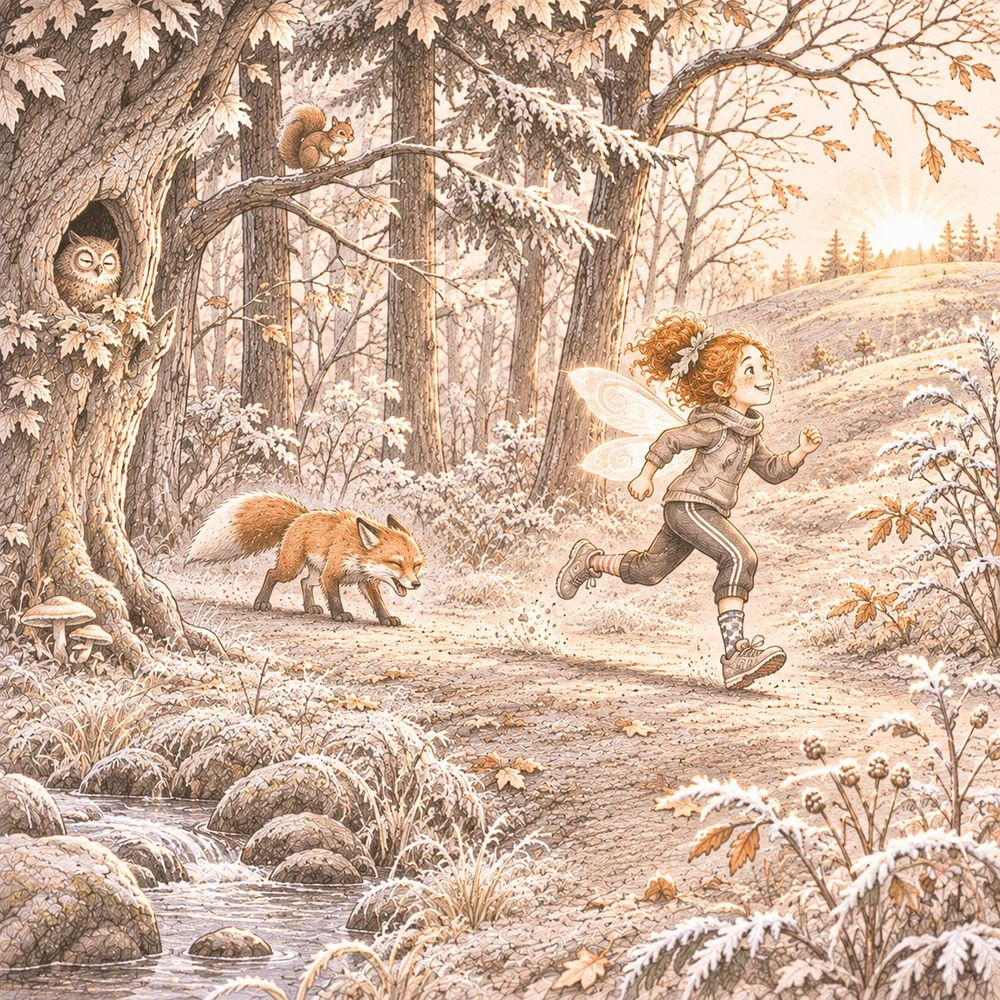
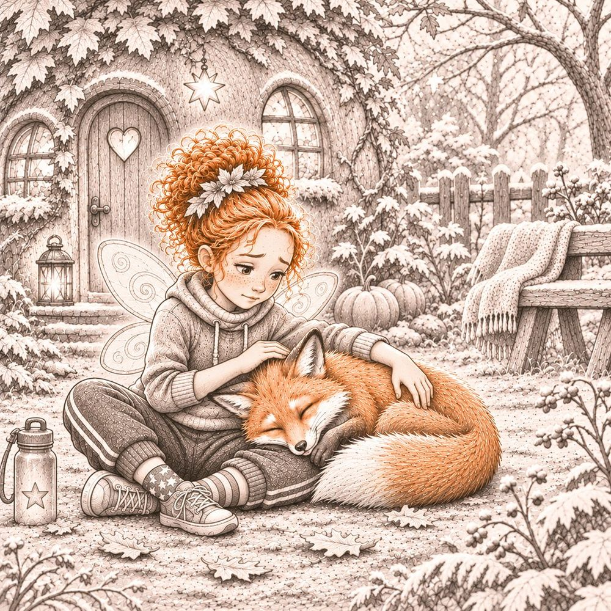
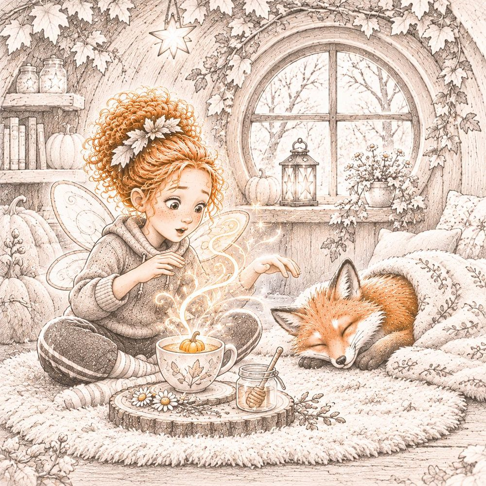
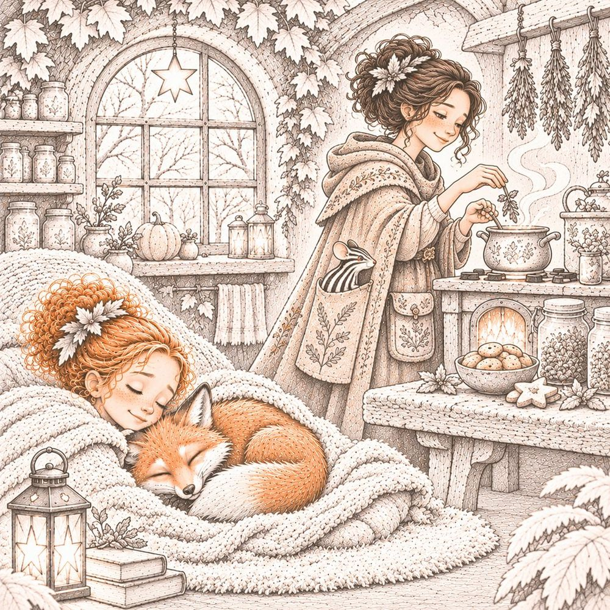
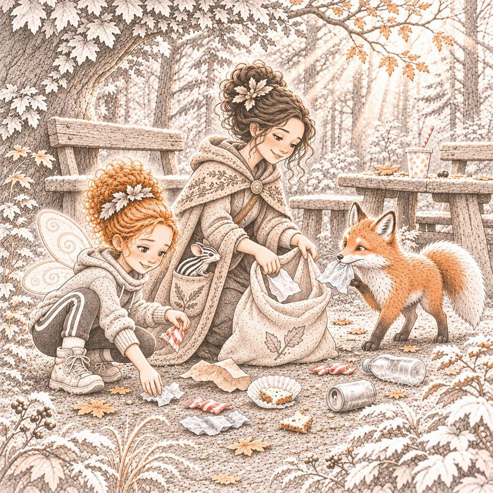
Hat euch die Geschichte gefallen?
Dann schenkt sie weiter. Ranas geheimer Schatz ist kostenlos, und je mehr Kinder mit Pia in Bewegung kommen, desto schöner. Teilt den Link mit Familie, Freunden, Großeltern, der Kita oder der Grundschule.
Das Winterpaket zum Ausdrucken
Die ganze Geschichte als PDF, dazu Ausmalbilder, Weihnachtskarten zum Ausmalen und Bastelanleitungen. Und das Faltbüchlein „Dein Krafttier Fuchs“ für unterwegs. Beides kostenlos.
Zu Pias SchatzkisteJeden Tag ein kleines Abenteuer
In der kostenlosen App erlebt ihr Pias Winterwunder im Flüsterwald, mit Übungen, Timer und einer Geschichte für jede Woche.
App öffnenAus der Kinderphysiotherapie
Pia ist in der Kinderphysiotherapie der Praxis Humaneo in Bad Homburg entstanden. Dort begleiten wir Babys und Kinder, wenn Bewegung, Haltung oder Koordination noch etwas Unterstützung brauchen.
Kinderphysiotherapie bei Humaneo